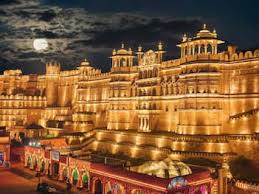
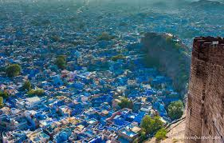
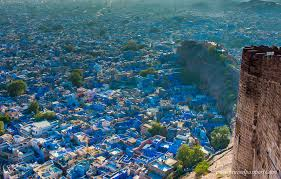

Jaipur, city, capital of Rajasthan state, northwestern India.
It is situated in the east-central part of the state, roughly equidistant from Alwar (northeast)
and Ajmer (southwest). It is Rajasthan’s most-populous city .
Hawa Mahal
Hawa MahalHawa Mahal (Hall of Winds), Jaipur, Rajasthan, India.
A walled town surrounded (except to the south) by hills, the city was founded in 1727
by Maharaja Sawai Jai Singh to replace nearby Amber (now Amer, a part of Jaipur)
as the capital of the princely state of Jaipur (founded by the Rajputs in the 12th century ce).
Jaipur grew dramatically in size in the late 20th and early 21st centuries, doubling its population
between 1991 and 2011. It has a mixed Hindu-Muslim population. The city was the site of numerous bombing attacks
in the early 21st century, with mosques and Hindu temples being targets.


Desert magic in the heart of Thar Welcome to Jaisalmer, the ‘Golden City’ of India, where time seems to have stood still and history is brought to life. This enchanting city located in the heart of the Thar Desert, is a traveller's delight with grand fortresses, ancient temples, tranquil lakes, and mesmerising sand dunes. Steeped in rich cultural heritage, Jaisalmer exudes an old-world charm that is hard to resist.
incredible Jaisalmer 
Nestled in the heart of the Thar Desert in the royal state of Rajasthan, India, lies the enchanting city of Jodhpur, often referred to as the "Blue City" and the "Sun City." Steeped in history, culture, and architectural splendour, Jodhpur beckons travellers from far and wide with its majestic forts, vibrant bazaars, and timeless charm.
 
